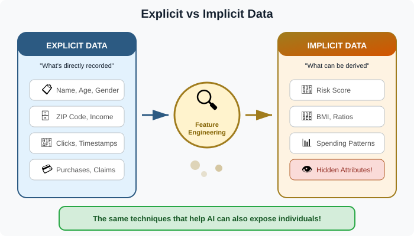
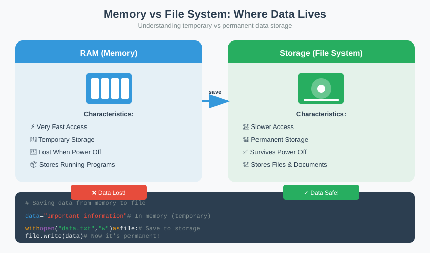

What we'll cover
- Follow the data — why location and lifespan come before analysis
- Generation & location — the four source groups, with concrete examples
- The data lifecycle — slack, journals, caches, backups; deletion is not destruction
- Order of volatility — RFC 3227, live vs dead acquisition (Activity 1)
- The four ownership layers — host, network, ISP/telco, cloud (Activity 2)
- Obtaining data from other parties — routes, retention vs lead time
- Recap & bridge to Part 3
Follow the data
Every digital action leaves traces in more than one place. A single message sent from a phone exists, at least briefly, in the phone's memory, in its storage, on the cellular and Wi-Fi networks it crossed, in the messaging provider's servers, and possibly in a cloud backup. Each copy has a different owner, a different lifespan, and a different legal path to reach it. The investigator's first job is not analysis — it is to map where the data is and how long it will last.
This ordering is deliberate, and it is the spine of the whole session. In Part 1 we said that forensic data carries constraints — lawful acquisition, integrity, admissibility. Here we make those constraints concrete by asking the most physical question imaginable: where, exactly, are the bytes? The answer is almost never "in one place". It is a scatter of copies across devices you hold, networks you do not, and servers in jurisdictions you may never visit. Treat the case as a map before you treat it as a puzzle.
Think of a footprint in three surfaces: wet sand at the tide line, dry sand higher up, and a concrete path. The same step is recorded in all three, but the tide will erase one within minutes, the wind will blur another over hours, and the third may last for years. Digital evidence behaves the same way — and you collect the wet-sand copy first.
Two questions therefore run through everything that follows, and it is worth writing them on the board: how long will this copy survive? (the volatility question) and who controls it, and under what law? (the ownership question). The first decides the order in which you act; the second decides the door you must go through. Most beginner mistakes come from answering one and forgetting the other — imaging a disk perfectly while the volatile memory you needed evaporates, or chasing a cloud account for months while a local copy sat in an evidence bag all along.
Discuss
Pick a routine action — sending a photo to a group chat last night at 9 pm. Off the top of your head, in how many distinct places does a trace of that one action now exist? Compare counts around the room. Most people undercount; the gap between their first guess and the real number is exactly the instinct this part is trying to build.
Where data is generated & stored
Forensic data is generated almost everywhere a device or service touches a person's activity. It is useful to group sources by who generates them — because the generator is usually also the holder, and the holder, as we will see, is who you must lawfully approach. Each group below comes with one concrete example so the abstraction stays grounded:
- The user's own devices — phones, laptops, wearables, vehicles, IoT sensors. Rich, personal, and usually the first thing seized. Example: a fitness watch logs a heart-rate spike and a GPS track that places its wearer at a location at 9:04 pm.
- Organisations the user interacts with — employers, banks, hospitals, schools. They generate records about the user as a by-product of providing a service. Example: a bank's transaction log shows a card payment at a petrol station two minutes before that GPS point.
- Service and infrastructure providers — ISPs, telecoms, hosting and cloud companies. They see connections, traffic metadata, and stored content. Example: a mobile carrier's records show which cell tower the phone was attached to during the same window.
- Commercial platforms — social media, e-commerce, advertising networks. Often the largest and most detailed behavioural records that exist about a person. Example: a social app holds the message itself, its delivery timestamps, and the device fingerprint that sent it.

Notice that most of this data is held by someone other than the person it describes. That single fact — ownership sits with the holder, not the subject — drives everything in the rest of this part. Notice too how the four examples above corroborate one another: the watch, the bank, the carrier and the app independently triangulate the same 9 pm event. Multiple weak sources that agree are often stronger evidence than one rich source that stands alone, because each was generated by a different party with no motive to coordinate.
The data lifecycle
Data moves through a predictable lifecycle, and evidence can be captured — or lost — at any stage:
The forensic insight is that deletion is not destruction. Removing a file usually only unlinks it; the operating system marks its space as available, but the bytes themselves survive until something else is written on top of them. Until that overwrite happens — which may be seconds or may be months — the data is fully recoverable. Much of forensics is recovering data that someone believed was gone.
It helps to know where those surviving copies hide, because each is a place an analyst will look and a place an adversary forgets to wipe:
- Slack space — the leftover at the end of a disk cluster. If a 6 KB file lands in an 8 KB cluster, the trailing 2 KB may still hold fragments of whatever occupied that cluster before. Deleting the new file does nothing to the old fragment.
- File-system journals — modern file systems record pending changes in a journal so they can recover from a crash. That journal can preserve the names, sizes and timestamps of files that have since been removed from the visible directory.
- Caches & temporary copies — thumbnail databases, browser caches, application temp files and previews routinely keep their own copy of content. A "deleted" photo often survives as a thumbnail long after the original is gone.
- Backups — the most reliable resurrection of all. A file deleted today may sit intact in last week's cloud or local backup, entirely outside the suspect's reach to delete.
A suspect empties the recycle bin, reformats a USB stick, and believes the chat export is gone. The visible file system is indeed clean. But the thumbnail cache still holds a preview of the image attachment, the file-system journal still lists the original filename and its deletion time, and a cloud backup taken the night before holds the export untouched. Three independent residual traces, none of which the suspect knew to address. "I deleted it" is rarely the end of the story.
The lifecycle view also explains when evidence is strongest. Data at the creation and storage stages is fresh and complete; once it reaches deletion, you are racing the overwrite. This is the same logic as the order of volatility — we are simply looking at it through the life of one file rather than the perishability of one medium. Both point the same way: the earlier you reach the data, the more of it you get.
Discuss
Where would you look first for a file a suspect swears they destroyed — the device in front of you, or somewhere the suspect never controlled in the first place? What does your answer tell you about who the most useful witness in a case often is?
Order of volatility
Some data evaporates in seconds; some persists for years. The order of volatility ranks data from most to least perishable, and gives the collection rule that follows from it: capture the most volatile evidence first, because waiting destroys it. This is not folklore — it is codified guidance. RFC 3227, the IETF's "Guidelines for Evidence Collection and Archiving", states the order of volatility explicitly and tells responders to collect from most volatile to least.
| Rank | Data | Typical lifespan |
|---|---|---|
| 1 (most volatile) | CPU registers, cache | Nanoseconds |
| 2 | RAM: running processes, open network connections, decrypted keys | Until power off |
| 3 | Network state, routing & ARP tables, live traffic | Seconds to minutes |
| 4 | Disk: files, swap, unallocated space, slack | Until overwritten |
| 5 | Remote logs, provider records, archives | Days to years (per retention policy) |
| 6 (least volatile) | Backups, printouts, physical configuration | Years |
This table maps directly onto a single, consequential decision: live acquisition versus dead acquisition. Live acquisition captures a running system — above all a memory capture of RAM (ranks 1–3) while the machine is still powered on, preserving running processes, open connections, and, critically, encryption keys that exist only in memory. Dead acquisition is the classic disk image (rank 4): power the machine down, attach a write-blocker, and image the storage bit-for-bit. Dead acquisition is cleaner and easier to defend in court — but it can be taken at any time later, whereas a live capture cannot.

Why pulling the plug can destroy the best evidence. A live-memory capture — decrypted keys, running processes, active chats — cannot be re-taken later. If the disk is encrypted and the only copy of the key is in RAM, cutting power converts a readable machine into an inaccessible brick. The instinct to "pull the plug to image the disk safely" is, in that case, exactly backwards: it preserves the least valuable layer and erases the most valuable one in the room. Decide live-vs-dead before you touch the power button.
Activity 1 — Build a volatility-ordered acquisition plan (in pairs)
You arrive at a desk. The laptop is powered on and unlocked, with an encrypted disk, a messaging app open, and an active VPN connection. On the desk sit a phone (locked), a USB stick, and a router blinking under the monitor. The user is not present.
Write the order in which you would acquire from each source, and for each one note: is this live or dead acquisition, and what is lost if you wait? Be ready to defend why the powered-on laptop's memory comes before its disk — and what single wrong move (hint: the power button) would collapse the whole plan.
Discuss
The RFC tells you to collect most-volatile-first. But live acquisition changes the running system slightly just by observing it, while dead acquisition is pristine. How do you weigh "capture more, but touch the system" against "capture less, but stay clean"? Part 3 will turn this exact tension into a question of admissibility.
The four ownership layers
Where data physically sits determines who owns it and which legal instrument you need to reach it. It is useful to think in four layers, moving outward from the suspect's own device to a foreign cloud. The table below is the summary; the subsections after it walk each layer with a realistic example and the legal instrument that opens it.
| Layer | Examples | Typical owner | Usual legal path |
|---|---|---|---|
| Host / Local | Phone, laptop, USB, on-device storage & RAM | The device owner / suspect | Lawful seizure, search warrant, or owner consent |
| Network | Router, firewall & IDS logs, corporate Wi-Fi, NetFlow | The organisation running the network | Internal authorisation; warrant for third parties |
| ISP / Telco | Subscriber identity, CDRs, connection & location records | Internet / telecom service provider | Court order or regulator-sanctioned request; data-retention law |
| Cloud / Remote | Email, social media, SaaS, object storage, backups | Cloud provider (often in another jurisdiction) | Provider legal process; cross-border MLAT where data is abroad |
Host / Local — the device in your hand
The innermost layer is the suspect's own hardware: the seized phone, the laptop, the USB stick, the on-device storage and the RAM. Example: the messaging app's local database on a seized phone still holds the 9 pm message, its read receipts, and attachment thumbnails. This is the layer you control most directly — once you have lawfully seized the device, you can image it on your own timetable. The legal instrument is a lawful seizure, a search warrant covering the device, or the owner's consent. The catch is access, not law: encryption and locked screens can put data you legally own beyond technical reach.
Network — the organisation in the middle
One step out is the network the activity crossed: routers, firewalls, intrusion-detection logs, corporate Wi-Fi association records, NetFlow. Example: the company Wi-Fi controller logs that the suspect's phone associated with the office access point from 8:50 to 9:15 pm, placing the device in the building during the message. The owner is the organisation running the network, so the legal instrument is internal authorisation when it is your own organisation, or a warrant when the network belongs to a third party. These logs are often short-lived — rotated in days — so they belong near the top of your acquisition list.
ISP / Telco — the carrier you cannot see into
Further out sit the internet and telecom providers: subscriber identity, call-detail records (CDRs), connection logs, and cell-site location records. Example: the mobile carrier's CDRs show the phone attached to a specific cell tower at 9:04 pm, independently corroborating the Wi-Fi log. You have no direct access here at all. The legal instrument is a court order or a regulator-sanctioned request, often resting on data-retention law that requires the carrier to hold such records for a fixed period. That retention window is finite, which is why this layer is where the clock starts ticking against you.
Cloud / Remote — the data in another country
The outermost layer is the cloud: email, social media, SaaS applications, object storage, and backups — frequently hosted in a different jurisdiction from your investigation. Example: the full message thread, its server-side delivery timestamps, and a synced backup live on the messaging provider's servers abroad. The legal instrument is the provider's own legal process and, where the data sits overseas, a cross-border MLAT (mutual legal assistance treaty) request. This is the slowest door of all, and the one most likely to be shut by a retention window before you get through it.
The further out you go, the less you control and the more process you need. A local disk you have lawfully seized is yours to image now; a chat log on a foreign cloud may take months of mutual legal assistance to obtain — by which time retention windows may have closed. The four layers are not just a map of where data lives; they are a map of how much friction stands between you and it.
Activity 2 — Map a 9 pm message across the four layers (small groups)
Take the running example: a single message sent at 9 pm from a suspect's phone. For each of the four ownership layers, write down (a) one concrete artefact that would carry evidence of that message, (b) who owns it, and (c) the legal instrument you would need to obtain it.
Then rank your four entries by how quickly each could disappear. Where does the volatility order and the ownership order disagree — that is, where is the most perishable evidence also the hardest to reach legally? That clash is the planning problem the next section is about.
Obtaining data from other parties
Because most data is held by someone other than the subject, much of forensic practice is acquisition from third parties — commercial websites, organisations, and governments. The legitimate routes, from lightest to heaviest, are roughly:
- Open / published sources — anything lawfully public. Scenario: a suspect's public social-media post timestamps them at a venue. Cheap and fast, but verify provenance before relying on it.
- Subject consent — the data subject grants access. Scenario: a victim voluntarily hands over their own account export containing the threatening messages. Clean, but limited to willing parties.
- Provider request under their terms — many platforms publish a law-enforcement or data-request process. Scenario: you submit a preservation-and-disclosure request through a platform's law-enforcement portal; they release only what their policy and the law allow.
- Court order / warrant — compels disclosure of stored content or records a provider will not release voluntarily. Scenario: a judge orders an email provider to hand over the contents of a named account.
- Regulatory channels & data-retention law — telecoms and ISPs are often required to retain certain records and disclose them through a sanctioned request. Scenario: a carrier produces cell-site records it was legally obliged to retain.
- Mutual Legal Assistance (MLAT) — the cross-border mechanism used when the data, or the company, sits in another country. Scenario: your authority asks a foreign government to compel a cloud provider headquartered abroad to disclose an account.
The clock is the enemy. Each route has a lead time, and retention windows are finite. The two run in opposite directions: the heavier the legal route, the longer it takes — yet the data it reaches is often held under a retention policy that is already counting down.
The retention window
Suppose a provider keeps connection logs for 90 days. From the moment the log is created, you have at most three months before it is purged on schedule. The shelf empties whether or not your paperwork has arrived.
The lead time
Now suppose the only lawful route to that log is an MLAT request that takes 6 months. Do the arithmetic: the request lands four months after the record was already deleted. You followed every rule and still reached an empty shelf.
The practical defence against this arithmetic is the preservation request — a fast, lightweight notice that asks the holder to freeze the relevant records while the slower legal process catches up. It does not give you the data; it stops the clock. Knowing which holders will honour a preservation request, and sending it on day one, is often what separates a recoverable case from a lost one. The lesson of this whole part, compressed: identify the volatile, far-flung copies first, and freeze them before you can read them.
Discuss
Given the 90-day-vs-6-month clash above, what could you have done on day one to still have the evidence by the time the MLAT cleared? Walk the timeline backwards from "data in hand" and find the latest moment each step had to start. Part 3 takes up the matching question: even when you can obtain data this way, what may you lawfully do with it, and will it be admissible?
Try it: the six-step investigation demo walks a single case from identification to court presentation. Watch the early steps in particular — identifying and preserving sources — and notice how much of the case is decided before any analysis begins, by whether the right copies were frozen in time.
Recap & further practice
- Every action leaves traces in several places at once, each with a different owner and lifespan.
- Data is generated by four source groups — user devices, organisations, providers, commercial platforms — and the holder is rarely the subject.
- Deletion is not destruction — slack space, journals, caches and backups keep residual traces until overwritten.
- The order of volatility (RFC 3227) dictates collection order: most perishable first. It forces the live-vs-dead acquisition choice — and pulling the plug can erase the best evidence.
- The four ownership layers (host, network, ISP/telco, cloud) map each source to an owner and a legal path; friction grows the further out you go.
- Obtaining third-party data ranges from open sources to MLAT; retention windows vs lead times make timing critical, and a preservation request stops the clock.
Further practice before Part 3: take the one piece of evidence you mapped at the end of Part 1 and now place it in the four-layer model — where does it physically live, who owns it, and what would you have to do, and how fast, to obtain it before it expires? Carry that example into Part 3, where the question shifts from can you get it to may you use it.